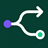

Через VPN 0
Пока нет своих сайтов
Всегда напрямую 0
Исключений нет

Выберите сервер, и сайты из списка пойдут через него. Всё остальное останется на обычном подключении.
Пароли хранятся только в этом браузере
Как в Happ: вставьте HTTPS-ссылку, остальное расширение разберёт само
Ссылка и ключ сохраняются только в этом профиле браузера и не попадают в GitHub.
Расширение видит такие узлы в подписке, но браузер не умеет поднимать их туннель. Запустите Happ или Amnezia и добавьте их локальный SOCKS5-порт как сервер выше.
Готовый список обновляется автоматически